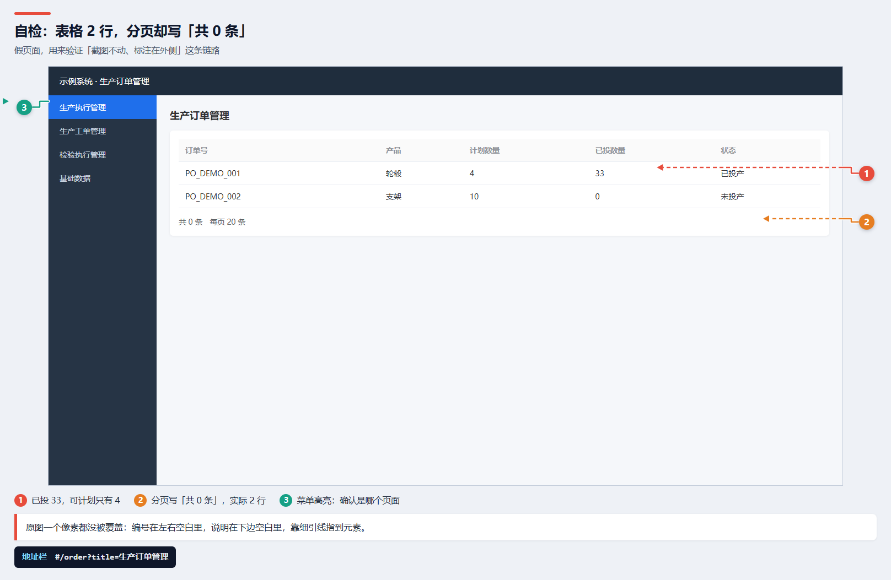

dextestweb 是一套给 AI Agent 的技能：从登录摸模块，到标注截图（原图一个像素都不动）、视频复现，
再到一份客户双击就能看的单文件报告。
专门解决「你不拥有这个系统、没有源码、没有设计文档」时的测试问题。

↑ 自检脚本生成的示例：原图没被覆盖，编号在左右空白里，说明在下边空白里，细引线指到元素。
点完菜单空白 4~18 秒。等目标元素出现再判断，把耗时单独记成性能问题。
行数 / 分页 / 接口 total 三方对照。有 18 行却写 0 条，是分页没接。
默认「未接收」是空的，切到「检验中」有 5 条。逐个筛选跑一遍再定性。
页面 + 接口/地址栏/库，两条证据才能写「确定」，一条只能写「疑似」。
# OpenCode 全局技能目录
git clone https://github.com/yyxc-cc/dextestweb ~/.config/opencode/skills/dextestweb
# 依赖（只在跑脚本时需要）
npm i playwright && npx playwright install chromium # 截图/录屏
# ffmpeg 用于切片和 GIF| 步骤 | 做什么 | 脚本 |
|---|---|---|
| 0 | 确认边界：只读优先、写数据先要授权、客户不用的模块不测 | — |
| 1 | 摸骨架：菜单→URL→行数→分页→按钮，产出 census.json | census.js |
| 2 | 逐页验证：等目标出现，逐个筛选，行数/分页/接口对照 | probe.js |
| 3 | 缺陷取证：步骤/期望/实际/数值变化序列 | — |
| 4 | 标注截图：干净截图 + 四周留白放编号/引线/图例（原图零覆盖） | lib/annotate.js |
| 5 | 视频/GIF：切片、两遍调色板、超 3MB 就降规格 | clip.js |
| 6 | 打包：资源内嵌单文件 HTML + PDF | pack.js |
| 7 | 自检：图片全加载、视频时长、结论↔证据、测试数据清理清单 | — |
node scripts/selftest.js
# ✓ 标注截图 ✓ 单文件 HTML ✓ 资源已内嵌 ✓ PDF不需要被测系统：脚本会造一个假页面，验证「标注 → 截图 → 内嵌 → PDF」整条链路。
SKILL.md | 主流程、三条规矩、交付自检、常见误判对照表 |
references/ | 01 摸骨架 · 02 取证与验证 · 03 打包交付（含 Windows 中文路径坑） |
scripts/ | census / probe / annotate / session / clip / pack / selftest |
templates/ | config · issue.md · report.html |